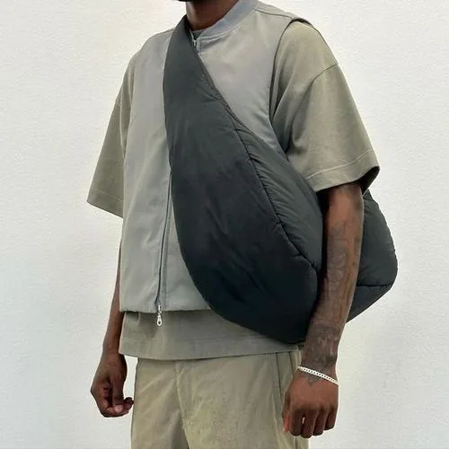

Para criar uma marca de bolsas você não precisa de fábrica, máquinas ou experiência em costura. Precisa de quatro coisas: um público bem definido, um produto bem desenvolvido, um fabricante que produza em lotes pequenos e um plano de venda. O passo a passo abaixo é o mesmo que as marcas que produzem com a LS Confecções seguem, do primeiro rascunho ao segundo lote.
1. Defina para quem você vai vender
Bolsa atende públicos muito diferentes: streetwear, academia, trabalho, viagem, infantil. Antes de escolher modelo ou tecido, responda três perguntas:
- Quem compra: idade, rotina e onde essa pessoa já compra hoje.
- Por que compra: estilo, função, identidade com um grupo ou praticidade.
- Quanto paga: o preço de produtos parecidos nos canais onde esse público compra.
Modelo, material, cores, canais e tom de comunicação saem dessas respostas. Uma marca de pochetes de rua e uma marca de bolsas para notebook vendem "bolsa", mas são negócios com clientes, preços e canais diferentes.
Antes de investir, teste a ideia com quem compraria. O Sebrae recomenda validar a ideia de negócio com clientes potenciais antes de colocar dinheiro no desenvolvimento completo, para reduzir o risco (fonte 1).
Na hora de fabricar, conheça a nossa produção de bolsas personalizadas, com peça piloto antes do lote.
2. Construa a identidade da marca
Não é preciso contratar agência para começar. É preciso definir o mínimo que faz o cliente reconhecer você:
- Nome curto, fácil de falar e com domínio e perfil disponíveis.
- Logo que funcione pequeno, em uma cor só, porque vai para etiqueta e bordado.
- Paleta e estilo de foto iguais em todos os canais.
- Uma frase que diga o que a marca faz e para quem.
Antes de mandar fazer etiquetas, consulte se o nome está livre na base do INPI. O Guia Básico do instituto orienta fazer essa busca prévia, porque não se registra marca igual ou parecida com outra já registrada para produtos semelhantes (fonte 2).
3. Desenvolva o produto com quem produz
Muita gente trava achando que precisa de desenho técnico profissional. Não precisa. Fotos de referência, prints e um croqui simples, somados ao trabalho de um fabricante, resolvem. Nesta etapa se definem três pontos.
Modelo e modelagem
O modelo parte do uso real. Uma bolsa para levar notebook precisa de bolso acolchoado com medida certa; uma pochete precisa de alça regulável e bolso de fácil acesso. O fabricante ajusta medidas e detalhes para que o produto funcione e caiba no preço que você quer cobrar.
Tecido e aviamentos
O tecido define aparência, toque, resistência e boa parte do custo. Trabalhamos com nylon, poliéster, oxford, cordura, sarja, lona de algodão cru e tecidos impermeáveis. Aviamentos são os componentes além do tecido: zíper, alça, fivela, forro, entretela. Eles pesam no custo e na percepção de qualidade, por isso valem atenção na piloto. Compare as opções no guia de tipos de tecido para mochilas e bolsas.
Aplicação da marca
Bordado tem acabamento em relevo e boa durabilidade. Silk é econômico para logos de poucas cores em lote. Sublimação permite estampa colorida em poliéster claro. Etiqueta tecida ou emborrachada completa o acabamento. Veja a comparação em bordado, silk ou sublimação.
A peça piloto
Antes do lote, produza uma peça piloto: a primeira unidade física, com a marca aplicada. Ela mostra se medidas, tecido e acabamento estão como você imaginou. Na LS Confecções, a piloto fica pronta em até 15 dias, e o desenvolvimento com amostra custa em média R$ 600, conforme o modelo. Corrigir uma peça custa muito menos que corrigir um lote.
4. Calcule o custo real e o preço
O custo por peça inclui mais do que o valor pago à fábrica. Some embalagem, frete, impostos, taxas de marketplace ou maquininha e o investimento em anúncio dividido pelas vendas. O e-book do Sebrae sobre preço de venda organiza o cálculo em etapas: custos, despesas fixas, impostos sobre a venda, margem desejada e, por fim, o markup. O mesmo material alerta que formar preço não é simplesmente dobrar ou triplicar o custo (fonte 3).
Markup e margem não são a mesma coisa
Markup é o multiplicador aplicado sobre o custo. Margem é a parte do preço de venda que sobra. Veja o mesmo custo com três preços:
| Custo por peça | Preço de venda | Markup | Margem bruta |
|---|---|---|---|
| R$ 40 | R$ 100 | 2,5x | 60% |
| R$ 40 | R$ 140 | 3,5x | 71% |
| R$ 40 | R$ 160 | 4,0x | 75% |
Os valores são um exemplo de cálculo, não um preço de referência. A margem bruta ainda precisa cobrir impostos, taxas e marketing. Para fazer a conta com os seus números, use a calculadora de preço e margem.
5. Comece com um lote pequeno
O erro mais caro de uma marca nova é produzir demais na estreia. O pedido mínimo na LS Confecções é de 20 peças por modelo e cor, e a produção leva até 25 dias úteis depois da aprovação da piloto. Um primeiro lote de 20 a 50 peças permite testar preço, canal e aceitação com o caixa sob controle. No segundo lote, o custo unitário tende a cair, porque a preparação se divide por mais peças, e você já corrige o que os clientes apontaram. Entenda o modelo em como funciona o private label.
6. Formalize a marca e o negócio
- CNPJ: permite emitir nota fiscal, comprar como empresa e vender para outras empresas. Muitas marcas começam como MEI (microempreendedor individual); confira os requisitos e o limite de faturamento vigente no Portal do Empreendedor do gov.br antes de escolher o enquadramento.
- Registro da marca no INPI: é o que garante o uso exclusivo do nome no Brasil. O registro vale por 10 anos a partir da concessão e pode ser prorrogado por períodos iguais (fonte 4).
- Domínio e perfis com o mesmo nome, reservados cedo.
Não é preciso esperar o registro concedido para produzir a piloto. Mas faça a busca e o pedido antes de investir em embalagem e comunicação.
7. Escolha os canais de venda
- Instagram e WhatsApp: vitrine no perfil e venda fechada na conversa. É o canal de entrada mais comum.
- Loja virtual própria: dá controle de preço, dados de cliente e marca.
- Marketplaces: ampliam o alcance, mas cobram comissão que precisa entrar na conta do preço.
- Lojas multimarcas e feiras: fazem sentido quando a produção já tem regularidade.
8. Lance com o produto real
Antes de anunciar, produza fotos e vídeos com a peça de verdade: uso no dia a dia, detalhes de costura, zíper e etiqueta. A peça piloto já serve para essa sessão de fotos. Uma lista de espera no WhatsApp ou uma pré-venda ajuda a medir o interesse antes de o lote chegar. No tráfego pago, comece com orçamento pequeno, meça o custo por venda e só aumente o que der retorno.
9. Acompanhe os números e reponha
Depois das primeiras vendas, acompanhe quais modelos e cores saem mais, qual canal traz mais vendas e quantos clientes compram de novo. Programe a reposição com antecedência: considere os 25 dias úteis de produção para não ficar sem estoque.
Quanto custa começar
O investimento em produto soma desenvolvimento com piloto (em média R$ 600) e o primeiro lote, cujo valor depende de modelo, tecido e personalização. Para entender o que move o preço por peça, leia quanto custa fabricar uma mochila personalizada.
Erros comuns de marcas novas
- Produzir demais na estreia e travar o caixa em estoque não testado.
- Precificar sem incluir frete, taxas e impostos.
- Tentar falar com todos os públicos ao mesmo tempo.
- Pular a peça piloto e aprovar o lote só por foto.
- Usar um nome sem consultar a base do INPI.
Perguntas frequentes
Preciso de CNPJ para começar uma marca de bolsas?
Para testar a ideia, não. Mas o CNPJ permite emitir nota fiscal, comprar como empresa e vender para outras empresas. Confira os requisitos do MEI e o limite de faturamento vigente no Portal do Empreendedor antes de escolher o enquadramento.
Qual a quantidade mínima para fabricar?
Na LS Confecções, 20 peças por modelo e cor. É um volume que permite testar a venda sem travar o caixa em estoque.
Preciso saber costurar ou ter fábrica?
Não. No private label você cuida da marca e da venda, e a fábrica cuida da modelagem, dos materiais e da produção.
Quanto tempo leva para produzir o primeiro lote?
A peça piloto fica pronta em até 15 dias. Depois da aprovação, a produção leva até 25 dias úteis.
Preciso registrar a marca antes de produzir?
Não é obrigatório para produzir a piloto ou o primeiro lote. Mas faça a busca na base do INPI antes de investir em etiquetas e embalagem, e peça o registro cedo.
Fontes
- Como validar ideia de negócio antes de investir nela?, Sebrae RN.
- Guia Básico de Marcas, Instituto Nacional da Propriedade Industrial (INPI).
- Saiba como fazer seu preço de venda (e-book), Sebrae.
- Manual de Marcas, capítulo 6: Concessão, manutenção e extinção do registro, INPI.
Pronto para produzir com a LS Confecções?
Fabricação B2B de bolsas, mochilas e acessórios personalizados a partir de 20 unidades, em São Paulo. Fale direto com nosso comercial e receba uma proposta em minutos.
Solicitar orçamento